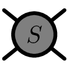

-matrix Bootstrap Extremal Amplitudes Viewer
Dimension $d=$
4
Spin $\ell=$
0
Optimized c
0
$\ell_{\mathrm{max}}=$
16
$N_\mathrm{max}=$
11
Improvement:
SPC (Subtracted Positivity Constraints)
TH (Threshold) + SPC
Amplitudes
Amplitude Max
Amplitude Min
Resonances
Almonds
Convergence plots
All d plots
S-matrix bootstrap framework (Work in progress)
References
An Analytical Toolkit for the S-matrix Bootstrap
arXiv:2006.08221
Bridging Positivity and S-matrix Bootstrap Bounds
arXiv:2210.01502